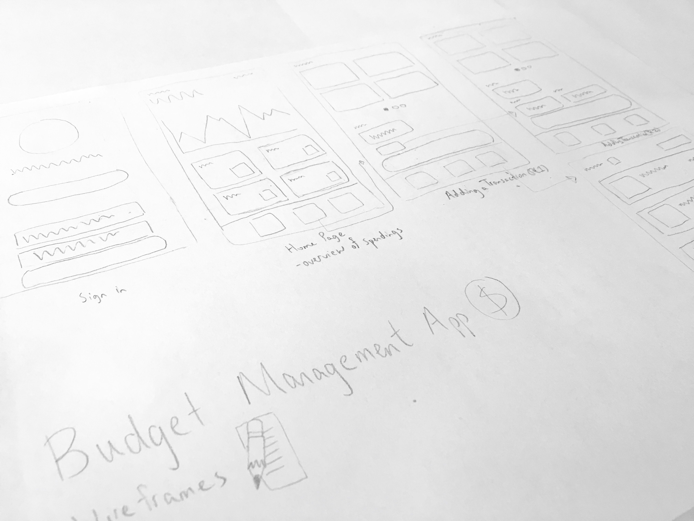
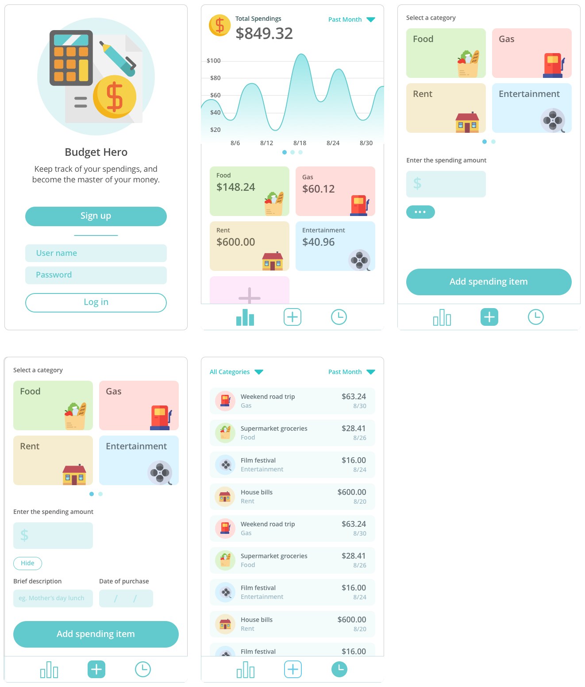
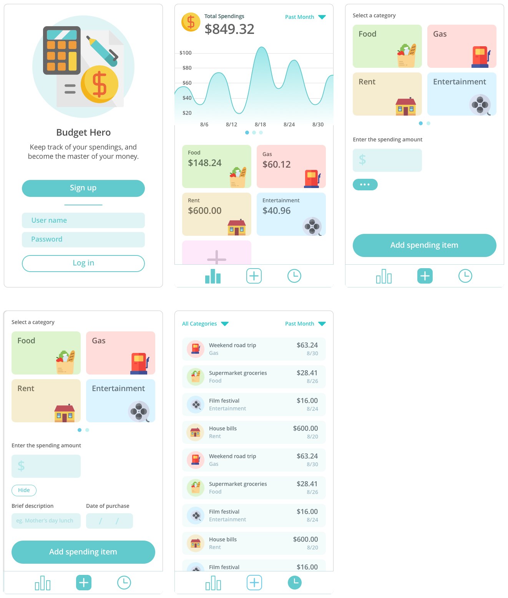

Helping young adults keep track of their spending budget
Problem Many adolescences often find themselves suddenly flung into the adult world of financial independence. One of challenges of becoming financially independent is learning to manage one's personal finances.
Research To learn more about the challenges of becoming financially independent, several young adults were interviewed. After analysis of the interviews, it was found that many young adults often:
- Underestimate their expected monthly spendings, leading to overspending
- Maintain a general idea of their spendings, but do not formally record their spending activity in detail
- Believe that keeping track of their spending activity seems time-consuming and troublesome
Managing one's spending activity was categorized into two main tasks:
- Monitoring past spending activity
- Recording recent transactions
When opening the app, users first see a spending overview, which displays:
- Total amount spent
- Spending trends over time
- Amount spent for each spending category, such as food, gas, or entertainment
If users would like to explore their spending history in detail, they're able to navigate to history screen that shows a list of individual transactions.
Furthermore, it was important recording transactions to feel effortless and streamlined in order to encourage usage throughout the day. The process of recording a transaction was simplified into two short steps:
- Selecting a spending category
- Entering the amount spent
Ideally, recording a transaction would take no longer than a minute. The user can also add additional information, such as a description of the purchase and a time log.
Finally, the project was designed for a mobile app platform to facilitate frequent, on-the-go usage. Ideally, users would be able to easily record their transactions and monitor their overall spending as they go about their day. 
 
